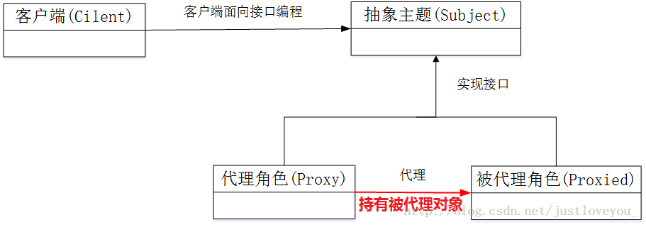

前言
这篇文章是对Java相关知识点的简要总结，主要记录了我个人之前所忽略的知识点
对于每个工具类的使用，这里不做详细探讨，具体可以参照官方文档，https://docs.oracle.com/javase/8/docs/api/
入门基础
Java程序运行机制
编译和解释结合
*.java 源文件 编译成 *.class 字节码文件
jvm解释执行字节码文件面试题：Java是解释执行的，对吗？
解答：
Java引进JIT技术之后，能将一些热点代码直接编译成机器语言
JIT 是 just in time 的缩写, 也就是即时编译编译器。使用即时编译器技术，能够加速 Java 程序的执行速度。下面，就对该编译器技术做个简单的讲解。
首先，我们大家都知道，通常通过 javac 将程序源代码编译，转换成 java 字节码，JVM 通过解释字节码将其翻译成对应的机器指令，逐条读入，逐条解释翻译。很显然，经过解释执行，其执行速度必然会比可执行的二进制字节码程序慢很多。为了提高执行速度，引入了 JIT 技术。
在运行时 JIT 会把翻译过的机器码保存起来，以备下次使用，因此从理论上来说，采用该 JIT 技术可以接近以前纯编译技术。
jvm、jre、jdk

jar 包 就是一些字节码文件进行打包
成员变量 与 局部变量
成员变量会自动初始化为默认值；局部变量必须先赋值才能使用
常量命名规范：大写+下划线 如 MAX_VALUE
int范围 -2^31 到 2^31-1
java浮点常量 可以用科学计数法表示
eg: 314e2=31400
314E2=31400
314E-2=3.14switch语句中case标签在JDK1.5之前必须是整数(long类型除外)或者枚举，不能是字符串，在JDK1.7之后允许使用字符串(String)。
重载：方法名相同，参数类型，个数，顺序不同
面向对象基础
java 内存模型
 -
-静态导入
jdk5之后的新特性
其作用是用于导入指定类的静态属性，这样我们可以直接使用静态属性。
import static java.lang.Math.*;//导入Math类的所有静态属性
import static java.lang.Math.PI;//导入Math类的PI属性方法的重写需要符合下面的三个要点：
1.“==”： 方法名、形参列表相同。
2.“≤”：返回值类型和声明异常类型，子类小于等于父类。
3.“≥”： 访问权限，子类大于等于父类。
访问权限修饰符
| 修饰符 | 同一个类 | 同一个包 | 子类 | 所有类 |
| ——— | ——– | ——– | —- | —— |
| private | | | | |
| default | | | | |
| protected | | | | |
| public | | | | |抽象类
有抽象方法的类，abstract关键字修饰
接口
- interface可以继承多个接口，class可以实现多个接口
- 接口所有方法都是抽象，默认是 public abstract
- 接口里面的变量，默认都是 public static final,(也即是接口里面只能定义常量)
匿名内部类
- 不会生成.class文件。只能使用一次
- 匿名内部类中不能存在任何的静态成员变量和静态方法。
- 匿名内部类没有构造器，可以使用构造代码块代替
异常机制

- Exception和Error的区别：Exception能被程序本身可以处理，Error是程序无法处理
- 需要注意的是，一旦某个catch捕获到匹配的异常类型，将进入异常处理代码。一经处理结束，就意味着整个try-catch语句结束。其他的catch子句不再有匹配和捕获异常类型的机会。
package exception; |
容器


1、所有集合类都位于java.util包下。Java的集合类主要由两个接口派生而出：Collection和Map，Collection和Map是Java集合框架的根接口，这两个接口又包含了一些子接口或实现类。
2、集合接口：6个接口（短虚线表示），表示不同集合类型，是集合框架的基础。
3、抽象类：5个抽象类（长虚线表示），对集合接口的部分实现。可扩展为自定义集合类。
4、实现类：8个实现类（实线表示），对接口的具体实现。
5、Collection 接口是一组允许重复的对象。
6、Set 接口继承 Collection，集合元素不重复。
7、List 接口继承 Collection，允许重复，维护元素插入顺序。
8、Map接口是键－值对象，与Collection接口没有什么关系。
9、Set、List和Map可以看做集合的三大类：
- List集合是有序集合，集合中的元素可以重复，访问集合中的元素可以根据元素的索引来访问。
- Set集合是无序集合，集合中的元素不可以重复，访问集合中的元素只能根据元素本身来访问（也是集合里元素不允许重复的原因）。
- Map集合中保存Key-value对形式的元素，访问时只能根据每项元素的key来访问其value。
IO流技术
如何理解流？
流是个抽象的概念，是对输入输出设备的抽象，Java程序中，对于数据的输入/输出操作都是以“流”的方式进行。设备可以是文件，网络，内存等。
摘自Oracle官方文档：https://docs.oracle.com/javase/tutorial/essential/io/streams.html
An I/O Stream represents an input source or an output destination. A stream can represent many different kinds of sources and destinations, including disk files, devices, other programs, and memory arrays.
Streams support many different kinds of data, including simple bytes, primitive data types, localized characters, and objects. Some streams simply pass on data; others manipulate and transform the data in useful ways.
No matter how they work internally, all streams present the same simple model to programs that use them: A stream is a sequence of data.
常用类 （学习使用的最好方法就是jdk api 文档）
File 表示数据源
//文件路径建议
String path = "D:/dir/a.txt"
// 或者
String path2 = "D:" + File.separator + "dir" + File.separator + "a.txt";四大抽象类
- InputStream
- OutputStream
- Reader
- Writer
FileInputStream FileOutputStream 文件字节流 ，数据在硬盘
ByteArrayInputStream ByteArrayOutputStream 字节数组流，数据源在虚拟机内存
解码、编码
- 编码： 字符 ——– 使用特定字符集（如UTF-8 ）——-> 字节
- 解码： 字节 ———-使用特定字符集 ———>字符
- 出现乱码的原因
String msg = "你好啊";
byte[] datas = msg.getBytes(); // 默认使用工程的字符集进行编码，此处假设为UTF-8
//(1) 字节数不够
msg = new String(datas, 0, datas.length-1, "utf8");
System.out.println(msg);
//(2) 编码解码的字符集不同
msg = new String(datas, "gbk");
System.out.println(msg);IO操作基本步骤
- 选择数据源
- 选择数据流
- 读或者写操作
- 释放资源
IO相关类 很多利用了 装饰者模式

FileInputStream fis = new FileInputStream(src);
BufferedInputStream bis = new BufferedInputStream(fis);// 将FileInputStream对象作为参数传入
多线程
java多线程三种实现方法
- 继承Thread类
- 实现Runnable接口
- 实现Callable接口
实现Runnable接口这种方式用到了静态代理这个设计模式
new Thread(实现了Runnable接口的对象).start();
静态代理设计模式：

代理模式主要包含三个角色，即抽象主题角色(Subject)、委托类角色(被代理角色，Proxied)以及代理类角色(Proxy)，如上图所示：
抽象主题角色:可以是接口，也可以是抽象类；
委托类角色：真实主题角色，业务逻辑的具体执行者；
代理类角色：内部含有对真实对象RealSubject的引用，负责对真实主题角色的调用，并在真实主题角色处理前后做预处理和后处理。// 接口
interface Driverable{
void drive();
}
// 被代理角色
class Car implements Driverable{
public void drive() {
System.out.println("moving...");
}
}
// 代理角色
class SmartCar implements Driverable{
private Driverable target; // 持有被代理对象
public SmartCar(Driverable target) {
this.target = target;
}
public void drive() {
begin(); // 增强功能
target.drive();
end(); // 增强功能
}
private void begin() {
System.out.println("启动智能系统");
}
private void end() {
System.out.println("关闭智能系统");
}
}线程五种状态

新建状态(New) : 线程对象被创建后，就进入了新建状态。例如，Thread thread = new Thread()。
就绪状态(Runnable): 也被称为“可执行状态”。线程对象被创建后，其它线程调用了该对象的start()方法，从而来启动该线程。例如，thread.start()。处于就绪状态的线程，随时可能被CPU调度执行。
运行状态(Running): 线程获取CPU权限进行执行。需要注意的是，线程只能从就绪状态进入到运行状态。
阻塞状态(Blocked) : 阻塞状态是线程因为某种原因放弃CPU使用权，暂时停止运行。直到线程进入就绪状态，才有机会转到运行状态。阻塞的情况分三种：
（1） 等待阻塞 – 通过调用线程的wait()方法，让线程等待某工作的完成。
（2） 同步阻塞 – 线程在获取synchronized同步锁失败(因为锁被其它线程所占用)，它会进入同步阻塞状态。
（3）其他阻塞 -- 通过调用线程的sleep()或join()或发出了I/O请求时，线程会进入到阻塞状态。当sleep()状态超时、join()等待线程终止或者超时、或者I/O处理完毕时，线程重新转入就绪状态。死亡状态(Dead) : 线程执行完了或者因异常退出了run()方法，该线程结束生命周期。
同步块
// obj称之为同步监视器
synchronized(obj){ 代码 }- obj可以是任何对象，推荐使用共享资源作为同步监视器
- 同步方法中无需指定同步监视器，因为同步方法的同步监视器就是this(即该对象本身)，或class(即类的模子)
注解
是什么：
Java注解又称Java标注
Java语言中的类、方法、变量、参数和包等都可以被标注。
和Javadoc不同，Java标注可以通过反射获取标注内容。
在编译器生成类文件时，标注可以被嵌入到字节码中。Java虚拟机可以保留标注内容，在运行时可以获取到标注内容。
元注解
是用于修饰注解的注解，通常用在注解的定义上，例如：
(ElementType.METHOD)
(RetentionPolicy.SOURCE)
public Override {
}- @Target：注解的作用目标
- @Retention：注解的生命周期
- @Documented：注解是否应当被包含在 JavaDoc 文档中
- @Inherited：是否允许子类继承该注解
自定义注解
- 定义一个用于数据库表的注解
- 注解里面可以定义注解元素，格式为类型 元素名() [default 元素值]
- 如果不指明default值，使用时必须传入元素值
(ElementType.TYPE)//只能应用于类上
(RetentionPolicy.RUNTIME)//保存到运行时
public DBTable {
String name() default "";
}//在类上使用该注解
(name = "user")
public class User {
// javabean
}
包装类
自动装箱，自动拆箱
Integer a = 1; // 自动装箱，编译器会转化为 Integer a = Integer.valueOf(1)
int b = a; // 自动拆箱 int b = a.intValue();缓存机制，缓存[-128, 127]之间的数字，具体查看Integer.valueOf()源码
Integer x = -128;
Integer y = Integer.valueOf(-128);
System.out.println(x==y); // true
System.out.println(x.equals(y));// true
字符串相关类
- StringBuffer 线程安全
- StringBuilder 线程不安全
时间处理相关类
 时间日期相关类
时间日期相关类DateFormat 抽象类 与 SimpleDateFormat 使用
public static void main(String[] args) throws ParseException {
// new出SimpleDateFormat对象
SimpleDateFormat s1 = new SimpleDateFormat("yyyy-MM-dd hh:mm:ss");
// 将时间对象转换成字符串
String daytime = s1.format(new Date());
System.out.println(daytime);
// 将符合指定格式的字符串转成成时间对象.字符串格式需要和指定格式一致。
String time = "2007-10-7 20:15:30";
Date date = s1.parse(time);
System.out.println(date);
}
文件类
常用方法
File f = new File("d:/c.txt");
f.createNewFile(); // 会在d盘下面生成c.txt文件
f.delete(); // 将该文件或目录从硬盘上删除
System.out.println("File是否存在："+f.exists());
System.out.println("File是否是目录："+f.isDirectory());
System.out.println("File是否是文件："+f.isFile());
System.out.println("File最后修改时间："+new Date(f.lastModified()));
System.out.println("File的大小："+f.length());
System.out.println("File的文件名："+f.getName());
System.out.println("File的目录路径："+f.getPath());创建目录
mkdir
File f2 = new File("d:/电影/华语/大陆");
boolean flag = f2.mkdir(); //目录结构中有一个不存在，则不会创建整个目录树
System.out.println(flag);//创建失败mkdirs
File f2 = new File("d:/电影/华语/大陆");
boolean flag = f2.mkdirs();//目录结构中有一个不存在也没关系；创建整个目录树
System.out.println(flag);//创建成功
枚举
所有的枚举类型隐性地继承自 java.lang.Enum。
枚举实质上还是类，而每个被枚举的成员实质就是一个枚举类型的实例，他们默认都是public static final修饰的。可以直接通过枚举类型名使用它们。
/**季节*/
enum Season {
SPRING, SUMMER, AUTUMN, WINDTER
}
/**星期*/
enum Week {
星期一, 星期二, 星期三, 星期四, 星期五, 星期六, 星期日
}
如何去学习框架
是什么
为什么用
怎么做 小实例，最好跟着官方文档的示例做
框架提供的api ( 相关类的使用 )
框架相关配置文件
个人理解，配置文件使得我们的系统解耦
一旦需求有变，只需要修改配置文件即可，无需更改源代码
以上为快速入门一个框架，说到底就是先学会怎么用工具，但是仅仅学会用是不够的。在会用的基础上，要站在高位去审视整个框架，去理解框架的架构，去更好地利用框架。如果框架本身提供的功能不能满足我们的需求，我们完全可以修改框架或者创造一个框架出来
高级主题
- 反射
- 动态代理
- jdbc
- 网络
- 多线程
- JVM
- 设计模式
对于高级主题推荐的书籍：
《java 并发编程实战》
《深入理解 java 虚拟机》
《mysql 必知必会》
《大话设计模式》
计算机网络：《TCP/IP详解卷一：协议》